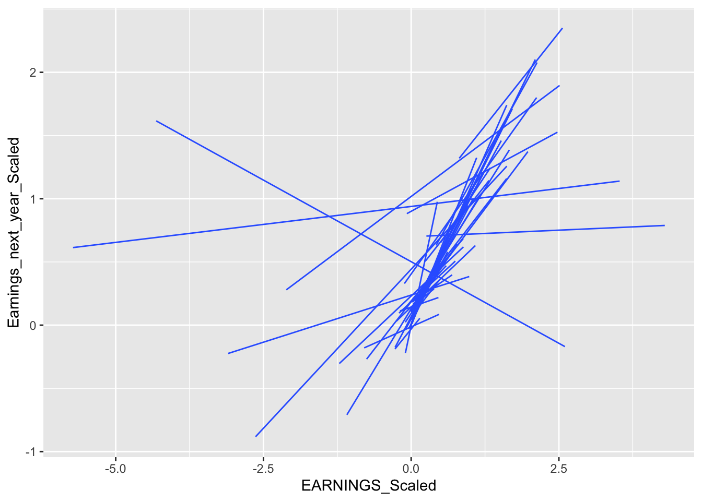
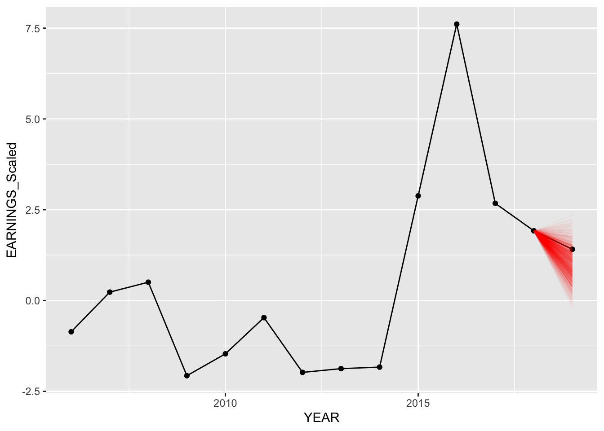
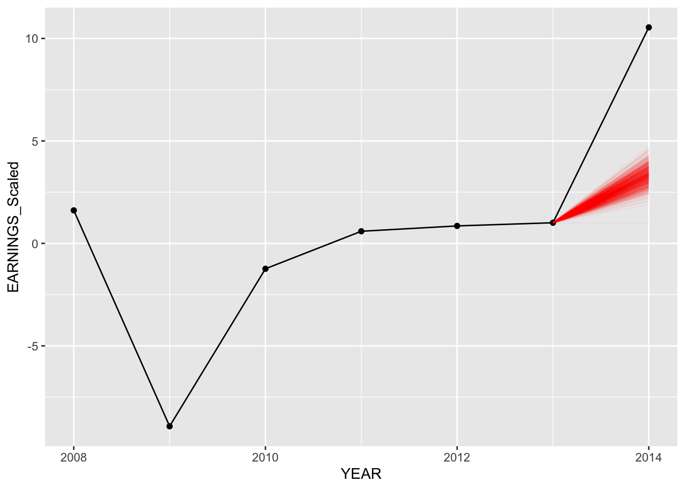

Chapter 3 Hierarchical Modeling
3.1 Set Up
Creating a testing set
Since we have time-series data, we created a testing set by sub-setting each company’s 2nd to latest year. We left off the most recent year a company reports their earnings and created a testing set with this data, the training set includes all the other previous years. We will predict earnings next year with the testing set and compare it with the actual values to help determine model accuracy.
testing <- data_elimatedO %>%
group_by(COMPANY) %>%
filter(row_number()==1)
training <- anti_join(data_elimatedO, testing)Tuning Priors
We do not have a strong understanding of variability between and within companies, thus we are using weakly informative priors. This means we are using the default values in the stan_glm package.
Defining Notation
In our model notation below, \(Y_{ij}\) is earnings for the next year after the \(i\)th year for company \(j\) and \(X_{ij}\) is the earnings in the \(i\)th year for company \(j\). Both variables are independent. For example, Y = Earnings of Apple in 2017 in billions, and X = Earnings of Apple in 2016 in billions.
3.2 Model 1: Hierarchical w/ Different Intercepts
3.2.1 Model Structure
Now, we will move on to utilizing the structure of our data, where we have consecutive observations for each company for several years. We start with a model with varying intercepts. Note: we fit each model using training data for evaluation purposes.
Diff_inter_train <- readRDS("Diff_inter_train_nick.rds")model_diff_inter_train_data <- training %>%
select(c("Earnings_next_year_Scaled","EARNINGS_Scaled","EARNINGS_1_YEAR_AGO","COMPANY","Sector")) %>% na.omit()
model_diff_inter_train <- stan_glmer(
Earnings_next_year_Scaled ~ EARNINGS_Scaled + EARNINGS_1_YEAR_AGO + Sector + (1 | COMPANY) , data = model_diff_inter_train_data,
family = gaussian,
chains = 4, iter = 5000*2, seed = 84735,
prior_PD = FALSE, refresh = 0)
write_rds(model_diff_inter_train, "Diff_Inter_train_nick.rds")prior_summary(Diff_inter_train)Below is the notation for the differing intercepts model:
\[\begin{split} \text{Relationship within company:} & \\ Y_{ij} | \beta_{0j}, \beta_1, \sigma_y & \sim N(\mu_{ij}, \sigma_y^2) \;\; \text{ where } \mu_{ij} = \beta_{0j} + \beta_1 X_{ij} + \beta_2 X_{ij} + \beta_3 X_{ij}...\\ & \\ \text{Variability between companies:} & \\ \beta_{0j} & \stackrel{ind}{\sim} N(\beta_0, \sigma_0^2) \\ & \\ \text{Prior information on Globals with Adjusted Prior} & \\ \beta_{0c} & \sim N(0.59, 1.5^2) \\ \beta_1 & \sim N(0, 1.74^2) \\ \beta_2 & \sim N(0, 1.60^2) \\ \beta_3 & \sim N(0, 4.60^2) \\ .\\ .\\ .\\ \sigma_y & \sim \text{Exp}(1.6) \\ \sigma_0 & \sim \text{Exp}(1) \\ \end{split}\]
3.3 Model 2: Hierarchical w/ Different Slopes and Intercepts
3.3.1 Model Structure
In addition to having a hierarchical regression with different intercepts, we decided to add a model with different intercepts and slopes.
Rational behind different slopes:
Below we graph 4 random companies, we can see that earnings in the current year impacts earnings next year differently among different companies.
eliminated %>%
filter(COMPANY %in% c("AAL","CVS","DAL","WAB")) %>%
ggplot(., aes(x = EARNINGS_Scaled, y = Earnings_next_year_Scaled)) +
geom_point() +
geom_smooth(method = "lm", se = FALSE) +
facet_grid(~ COMPANY)To get a better idea of the varying slopes, I graph 50 random companies together.
vector <- eliminated$COMPANY
vector <- sample_n(as.data.frame(vector), 50)
vector <- as.list(vector)
eliminated %>%
filter(COMPANY %in% vector$vector) %>%
ggplot(aes(x=EARNINGS_Scaled, y= Earnings_next_year_Scaled, group = COMPANY))+
geom_smooth(method = "lm", se= FALSE, size = 0.5)
We believe it makes sense to replace the global earnings coefficient with a company specific earnings coefficient.
Diff_inter_slope_train <- readRDS("Diff_inter_slope_train_nick.rds")model_diff_inter_slope_train_data <- training %>%
select(c("Earnings_next_year_Scaled","Sector","COMPANY","EARNINGS_Scaled","EARNINGS_1_YEAR_AGO")) %>%
na.omit()
diff_slope_inter_model_train <- stan_glmer(
Earnings_next_year_Scaled ~ EARNINGS_Scaled + EARNINGS_1_YEAR_AGO + (EARNINGS_Scaled | COMPANY) + Sector, data = model_diff_inter_slope_train_data,
family = gaussian,
chains = 4, iter = 5000*2, seed = 84735,
prior_PD = FALSE)
write_rds(diff_slope_inter_model_train, "Diff_inter_slope_train_nick.rds")prior_summary(Diff_inter_slope_train)Different intercepts & slopes model notation:
\[\begin{split} Y_{ij} | \beta_{0j}, \beta_{1j}, \sigma_y & \sim N(\mu_{ij}, \sigma_y^2) \;\; \text{ where } \; \mu_{ij} = \beta_{0j} + \beta_{1j} X_{ij} + \beta_{2} X_{ij} + \beta_{3} X_{ij}...\\ & \\ \beta_{0j} & \sim N(\beta_0, \sigma_0^2) \\ \beta_{1j} & \sim N(\beta_1, \sigma_1^2) \\ & \\ \beta_{0c} & \sim N(0.59, 1.5^2) \\ \beta_1 & \sim N(0, 1.74^2) \\ .\\ .\\ .\\ \sigma_y & \sim \text{Exp}(1.6) \\ \sigma_0, \sigma_1, ... & \sim \text{(something a bit complicated)}. \\ \end{split}\]
3.4 Model Evaluations
3.4.1 Is this the right model?
Using our models we simulate replicated data and then compare these to the observed data to look for discrepancies between the two in the plots below.
pp_check(Diff_inter_train) 
pp_check(Diff_inter_slope_train)
Several company earnings’ on the right seem to be causing model fitness difficulties. Both models run into this problem.
There seems to be little difference between the two models in terms of fitting the structure of earnings next year. We will now dive into predicting the accuracy of the models.
3.4.2 How Accurate are the models?
Model 1 - Specific Examples with companies:
Below, we compare our predictions for American Airlines. We plot 750 random values predicted from our predictions (out of 20,000). As we can see below our predictions range cover the actual value of earnings for 2020 fiscal year for both models.
set.seed(84732)
predict_model("AAL", Diff_inter_train)
# mcmc_areas(predict_next_year, prob = 0.8) +
# ggplot2::scale_y_discrete(labels = c(`test_comp`)) + geom_vline(xintercept = actual, linetype = "dashed", colour = "red")
#Need Help Because X scale is differentModel 2 - Specific Examples with companies:
set.seed(84732)
predict_model("AAL", Diff_inter_slope_train)
# mcmc_areas(predict_next_year, prob = 0.8) +
# ggplot2::scale_y_discrete(labels = c(`test_comp`)) + geom_vline(xintercept = actual, linetype = "dashed", colour = "red") The predictions for the second model seem to be slightly better as more posterior predictive points are near the actual value for “2020”.
Evaluating Metrics
For the prediction metrics, we calculated 20,000 values for each individual company using the hierarchical models. We then take the median value of the 20,000 for each company and calculate the mean distance from the median to the actual earnings observed for that year. We also computed the 95% and 50% prediction intervals by calculating the percentage of 20,000 predicted values are within the 2.5th and 97.5th percentile and 25 to 75th percentile respectively.
Different Intercepts Model:
Diff_inter_metrics## MAE Within95 Within50
## 1 0.3620034 0.7543103 0.4181034Different Intercepts & Slopes Model:
Diff_inter_slope_metrics## MAE Within95 Within50
## 1 0.2781092 0.7931034 0.4935345We can see that our model with varying intercepts and slopes (model 2) preforms slightly better. Where our average median posterior prediction is off by 0.28 billion as opposed to 0.362 billion when we only have differing intercepts. Furthermore, our 95 and 50 interval values are both better in the model with different intercept and slope.
Shrinkage
Since we modeled based off different companies having different intercepts, it is worthwhile to checkout how the company baselines shrunk compared to each other and between the two different models. We randomly sampled 70 companies, since if we plot all companies we will have more than 400 companies on the X-axis. We can visually see how the intercepts become less varied as we are looking at the hierarchical model with different intercept and slopes.
Model 1 Shrinkage:
Model 2 Shrinkage:
3.4.3 Interpreting Coefficents: NOT COMPLETED
tidy(Diff_inter_train, effects = "fixed", conf.int = TRUE, conf.level = .80)## # A tibble: 13 × 5
## term estimate std.error conf.low conf.high
## <chr> <dbl> <dbl> <dbl> <dbl>
## 1 (Intercept) 0.320 0.0744 0.225 0.417
## 2 EARNINGS_Scaled 0.222 0.00686 0.213 0.230
## 3 EARNINGS_1_YEAR_AGO 0.0961 0.00613 0.0883 0.104
## 4 SectorConsumer Discretionary 0.115 0.0856 0.00449 0.225
## 5 SectorConsumer Staples 0.341 0.0998 0.212 0.469
## 6 SectorEnergy 0.337 0.112 0.195 0.480
## 7 SectorFinancials 0.288 0.0862 0.178 0.400
## 8 SectorHealth Care 0.0608 0.0865 -0.0500 0.173
## 9 SectorIndustrials 0.132 0.0843 0.0248 0.242
## 10 SectorInformation Technology 0.0635 0.0844 -0.0449 0.174
## 11 SectorMaterials 0.0971 0.0989 -0.0316 0.224
## 12 SectorReal Estate -0.0825 0.0959 -0.207 0.0401
## 13 SectorUtilities 0.234 0.0962 0.110 0.357tidy(Diff_inter_slope_train, effects = "fixed", conf.int = TRUE, conf.level = .80)## # A tibble: 13 × 5
## term estimate std.error conf.low conf.high
## <chr> <dbl> <dbl> <dbl> <dbl>
## 1 (Intercept) 0.308 0.0555 0.236 0.378
## 2 EARNINGS_Scaled 0.547 0.0203 0.521 0.573
## 3 EARNINGS_1_YEAR_AGO 0.0408 0.00697 0.0320 0.0500
## 4 SectorConsumer Discretionary -0.0272 0.0630 -0.107 0.0536
## 5 SectorConsumer Staples 0.0583 0.0726 -0.0339 0.152
## 6 SectorEnergy 0.181 0.0794 0.0778 0.283
## 7 SectorFinancials 0.119 0.0623 0.0397 0.201
## 8 SectorHealth Care 0.000288 0.0636 -0.0801 0.0823
## 9 SectorIndustrials 0.0192 0.0619 -0.0592 0.0996
## 10 SectorInformation Technology -0.0370 0.0613 -0.116 0.0419
## 11 SectorMaterials -0.0381 0.0704 -0.128 0.0521
## 12 SectorReal Estate -0.128 0.0697 -0.217 -0.0371
## 13 SectorUtilities 0.0597 0.0685 -0.0272 0.148Global Standard Deviation Parameters: NOT COMPLETED ADFASGARGERGEARG
tidy(model_2, effects = "ran_pars")
(0.4512^2)/((0.4512^2) + (0.5519447^2))
tidy(model_3, effects = "ran_pars")
(0.4294^2)/((0.4294^2) + (0.5450631)^2)In model 2, about 40.06% of the variance can be explained between companies. In model 3, about 38.29% of the variance can be explained between companies. This means that when including sectors and lagged variables, more variable shrinkage occurred. Unfortunately this shrinkage is not as evident in the plotted graphs above. Model 3’s baseline intercepts differ among each other slightly less than model 2’s.